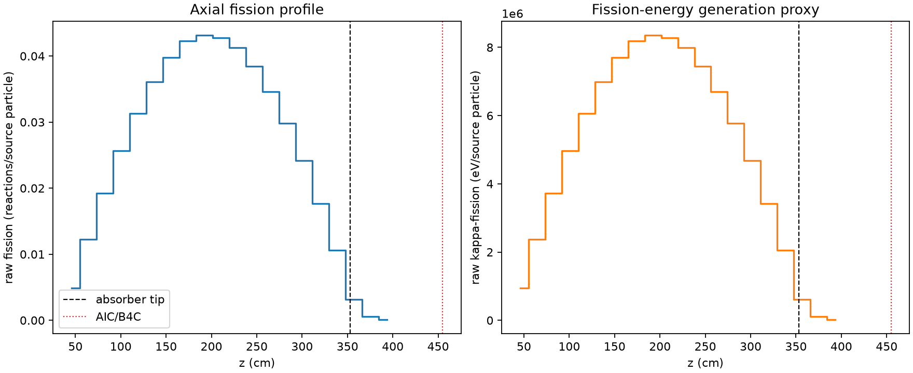
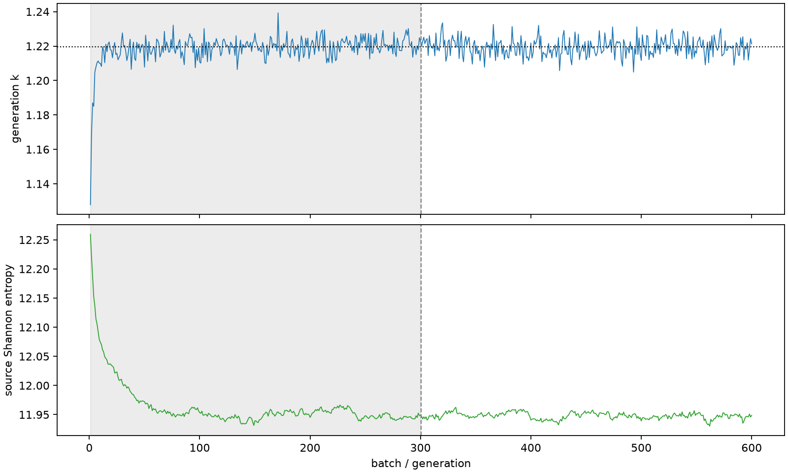

| field | value |
|---|---|
| experiment | V2-STAGE_256_OGRENCI_02-0014 |
| k | 1.2196132269377182 |
| MC standard error | 0.00020054599591375728 |
| seconds | 1010.7870128380018 |
| acceptance | not_assessed |
| convergence | review_required |
Completed is output integrity only; physical and statistical review required. Zero tallies do not prove zero production or zero uncertainty.
| diagnostic | value |
|---|---|
| geometric fuel voxels | 5280 |
| zero fission tally voxels | 0 |
| low signal fuel voxels | 2 |
| low signal fission share | 1.659463021763566e-06 |
| low signal kappa share | 1.6596035719635174e-06 |
| important fission share | 0.9500440404042474 |
| previous filter included | 5278 |
| duration estimate s | 1562.5173488400023 |
| actual minus estimate s | -551.7303360020005 |
| fission relative MC error | statistics |
|---|---|
| all_geometric_fuel | {"voxels": 5280, "positive_mean_voxels": 5280, "zero_mean_voxels": 0, "undefined_relative_error_voxels": 0, "median": 0.009607277567846018, "p95": 0.07911391512536867, "maximum": 0.21865392574918938} |
| low_signal | {"voxels": 2, "positive_mean_voxels": 2, "zero_mean_voxels": 0, "undefined_relative_error_voxels": 0, "median": 0.21559796443029527, "p95": 0.21834832961729997, "maximum": 0.21865392574918938} |
| important_95pct | {"voxels": 3838, "positive_mean_voxels": 3838, "zero_mean_voxels": 0, "undefined_relative_error_voxels": 0, "median": 0.008621274213531014, "p95": 0.012794662667014092, "maximum": 0.01628188726387799} |
| outside_previous_filter | {"voxels": 2, "positive_mean_voxels": 2, "zero_mean_voxels": 0, "undefined_relative_error_voxels": 0, "median": 0.21559796443029527, "p95": 0.21834832961729997, "maximum": 0.21865392574918938} |
| kappa_fission relative MC error | statistics |
|---|---|
| all_geometric_fuel | {"voxels": 5280, "positive_mean_voxels": 5280, "zero_mean_voxels": 0, "undefined_relative_error_voxels": 0, "median": 0.009596778048584474, "p95": 0.07898949321889229, "maximum": 0.21835445043780638} |
| low_signal | {"voxels": 2, "positive_mean_voxels": 2, "zero_mean_voxels": 0, "undefined_relative_error_voxels": 0, "median": 0.21531301269754638, "p95": 0.2180503066637804, "maximum": 0.21835445043780638} |
| important_95pct | {"voxels": 3838, "positive_mean_voxels": 3838, "zero_mean_voxels": 0, "undefined_relative_error_voxels": 0, "median": 0.008611217922181506, "p95": 0.012780622416315125, "maximum": 0.01626254771641064} |
| outside_previous_filter | {"voxels": 2, "positive_mean_voxels": 2, "zero_mean_voxels": 0, "undefined_relative_error_voxels": 0, "median": 0.21531301269754638, "p95": 0.2180503066637804, "maximum": 0.21835445043780638} |
| axial bin | fission share | kappa-fission share |
|---|---|---|
| 1 | 0.009749573587689686 | 0.009750022939994494 |
| 2 | 0.024674012663077234 | 0.02467393900408052 |
| 3 | 0.03867322764263067 | 0.038673057908849215 |
| 4 | 0.05148660750050331 | 0.051486421242960906 |
| 5 | 0.06288721219644092 | 0.06288694538748962 |
| 6 | 0.07249375231230987 | 0.07249359121378056 |
| 7 | 0.07984595126034193 | 0.07984589949431709 |
| 8 | 0.08487500897765747 | 0.0848748744589445 |
| 9 | 0.08661377377900106 | 0.08661364669863389 |
| 10 | 0.08588700351896639 | 0.0858869924203107 |
| 11 | 0.08295485286156225 | 0.082954582530024 |
| 12 | 0.07723958136994116 | 0.07723923623879587 |
| 13 | 0.06952565615956224 | 0.06952559404599742 |
| 14 | 0.059952580845549 | 0.05995252884281188 |
| 15 | 0.04850297646755567 | 0.048502886057682056 |
| 16 | 0.035504785986439844 | 0.03550459146174908 |
| 17 | 0.021309236431172995 | 0.021309203407679785 |
| 18 | 0.006421179024416344 | 0.006422368203782038 |
| 19 | 0.0011865731854786036 | 0.0011870524546199615 |
| 20 | 0.00021645422970315814 | 0.0002165659874963375 |
Histories include the inactive-to-active transition at batch 300. kappa-fission approximates fission energy production, not total heat deposition.

